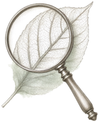
Психология
Разговор о том, что происходит внутри: привязанность, границы, внутренние голоса. Без диагнозов и без спешки.
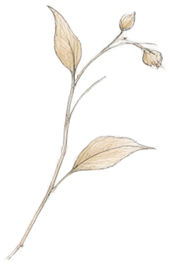
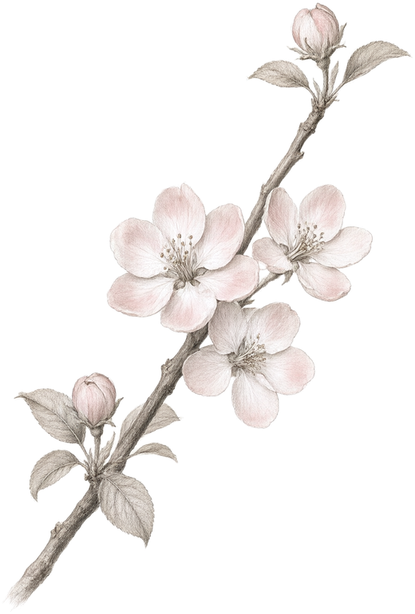
тихое место, где женственность рассматривают,
а не доказывают
восемь глав · листайте неспешно
листайте вниз
глава II
Нам интересно, что происходит со словом «феминность», когда его перестаёшь доказывать. Оно снимает доспех и остаётся почерком — неровным, живым, узнаваемым.
Мы замечаем, что женственность чаще ощущают, чем формулируют. Она в том, как рука держит чашку. В паузе перед ответом. В умении оставить последнее слово непрозвучавшим.
Вопрос, который мы задаём себе чаще других: что остаётся, когда убраны все ожидания — чужие и собственные?
Здесь мы не ищем правильную женщину. Мы рассматриваем разные её версии, как рассматривают гербарий: бережно, с любопытством, без спешки. И иногда оказывается, что самый тихий голос в комнате — самый точный.
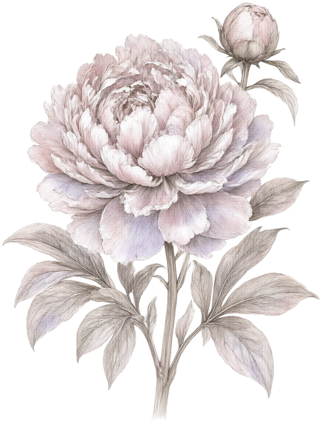
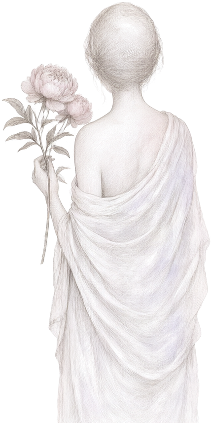
глава III
Мы смотрим на одно и то же через четыре линзы.
Ни одна не даёт полной картины — вместе они дают объём.
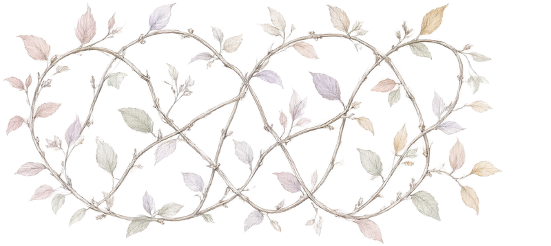

Разговор о том, что происходит внутри: привязанность, границы, внутренние голоса. Без диагнозов и без спешки.
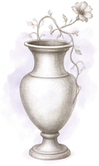
Старые истории как зеркала. Архетипы помогают увидеть свой сюжет со стороны — и, если захочется, переписать его конец.
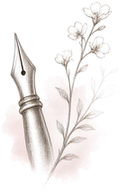
Линия, цвет, образ. Там, где слова заканчиваются, начинается рисунок.
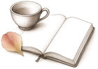
Чашка чая, тетрадь, честный рассказ. То, что прожито, весит больше того, что вычитано.
глава IV
Пять зарисовок. Может быть, в одной из них вы узнаете себя.
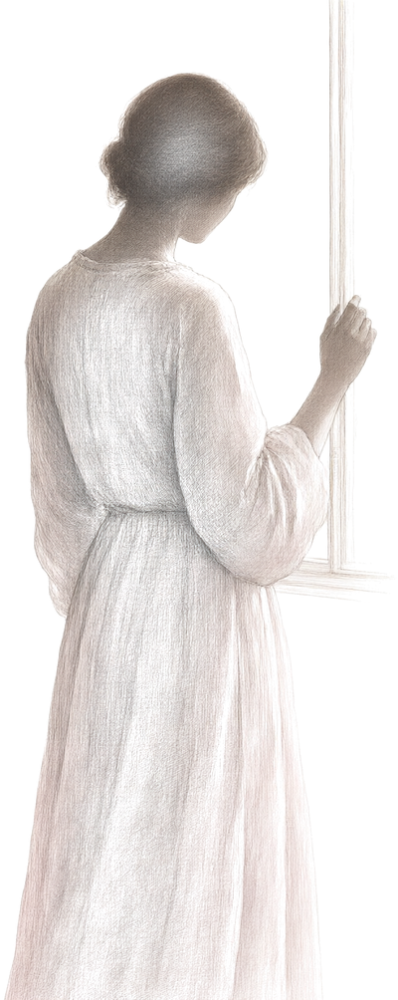
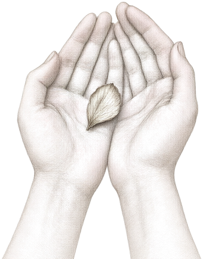
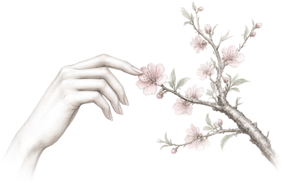
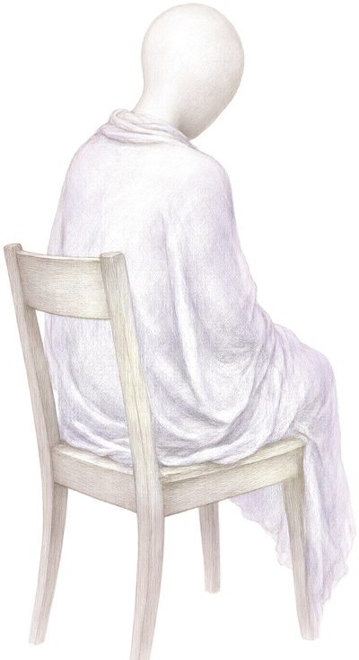
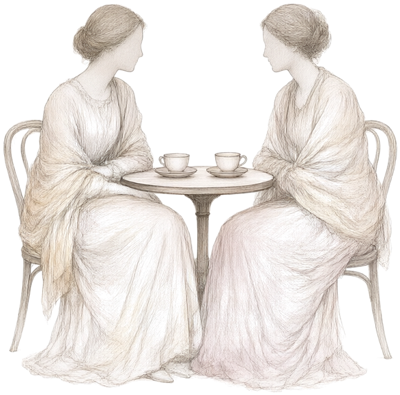
Здесь нет возрастных рамок и требований.
Есть только приглашение — быть рядом.
глава V
Два голоса, одна лаборатория
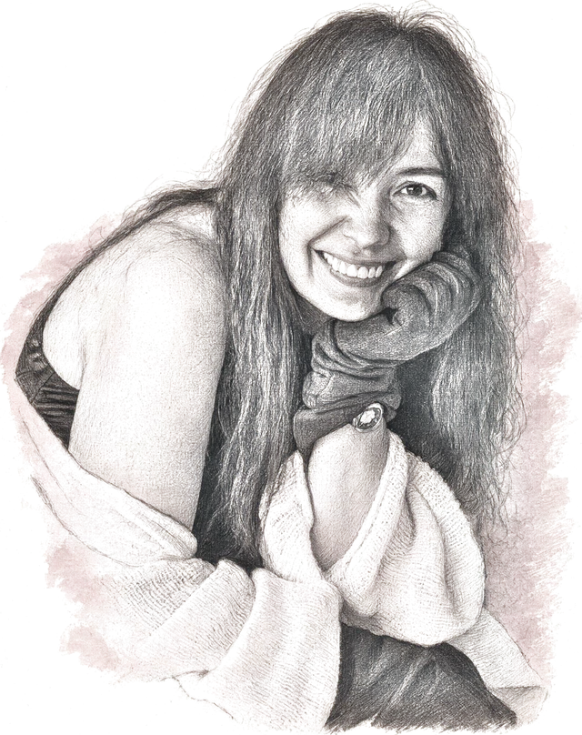
Я работаю с историями, которые трудно рассказать вслух. Десять лет практики, много бумаги и ещё больше тишины.
Мне важно, чтобы в комнате было безопасно молчать. В этой лаборатории я держу оптику психологии — и чайник.
люблю утренний чай и старые письма
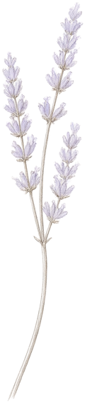
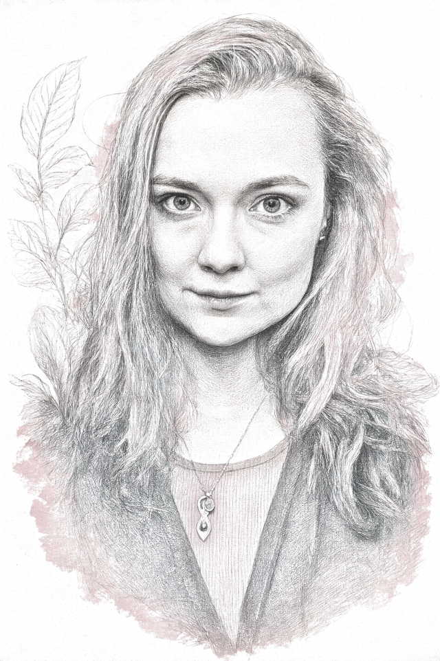
Я пришла из филологии и книжной графики. Собирала истории задолго до того, как научилась их рисовать.
Мне важно, чтобы образы не объясняли, а приглашали. В этой лаборатории я веду линию мифа и искусства — и рисую всё, что вы здесь видите.
держу гербарий с 2011 года
глава VI
Дневник лаборатории
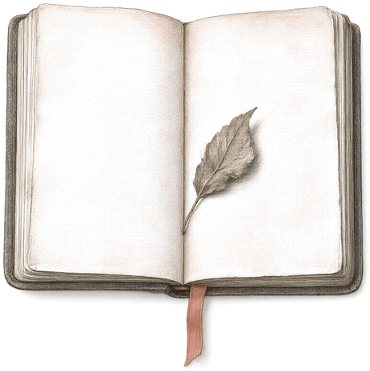
12 января
онлайн — читали вслух и молчали там, где нужно.
2 марта
мастерская на Садовой — засушивали лепестки и разговоры.
24 мая
онлайн — два часа без спешки и без выводов.
летом
место уточняется — набросок, который ещё не стал планом.
осенью
по письмам — формат для тех, кому легче писать, чем говорить.
глава VII
Процесс, а не результат
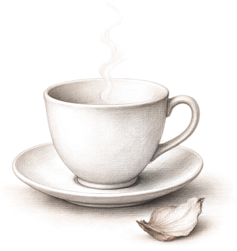
Первые минуты — без слов. Мы устраиваемся, ставим чашку, выдыхаем. Как когда открываешь книгу и сначала просто рассматриваешь обложку.
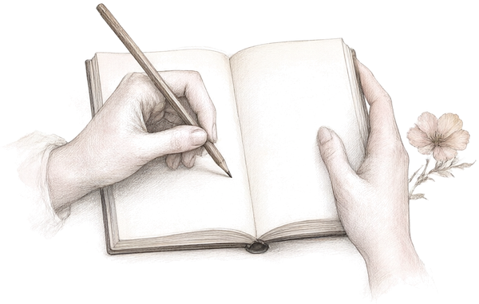
Текст, образ, историю — что-то, что становится точкой опоры для разговора. Не «материал для обсуждения», а повод задуматься вместе.
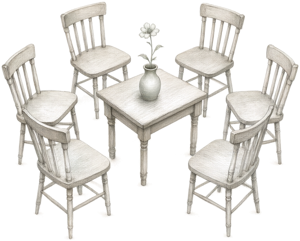
Медленно, без перебиваний. Каждый голос важен. Мы не ищем правильных ответов — мы исследуем вопросы. Иногда самый точный ответ звучит тише всех.
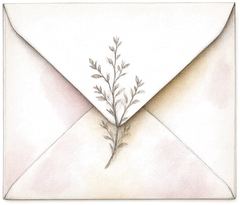
Короткое письменное упражнение. Несколько строк для себя. Как пометка на полях — не для архива, а чтобы запомнить ощущение.
Три формы, в которых мы встречаемся чаще всего
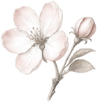
Шесть стульев, одна тема, два часа. Самый частый наш формат.
написать нам →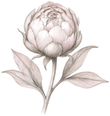
Целый день в мастерской: разговор, рисунок, чай, снова разговор.
написать нам →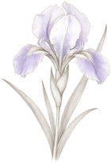
Несколько недель писем друг другу. Медленно — значит внимательно.
написать нам →
Если хотите быть рядом —
оставьте свой адрес.
Мы пишем редко и только по делу:
о встречах, о новых главах, о тишине.
нажимая «оставить», вы просто оставляете адрес — ничего больше
До встречи на следующей странице…
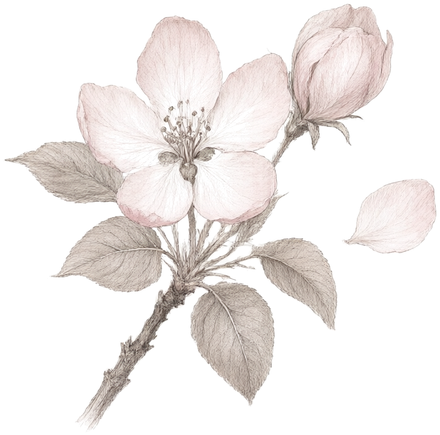